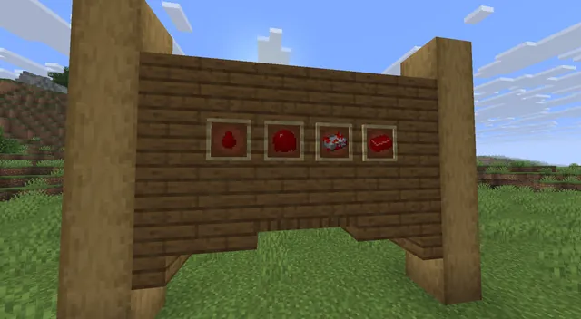
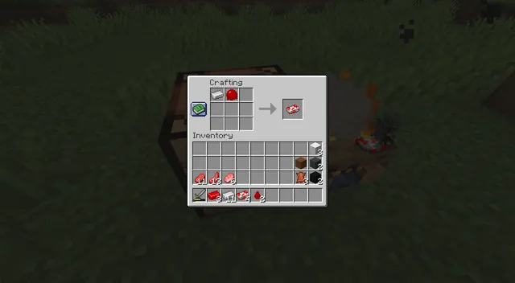
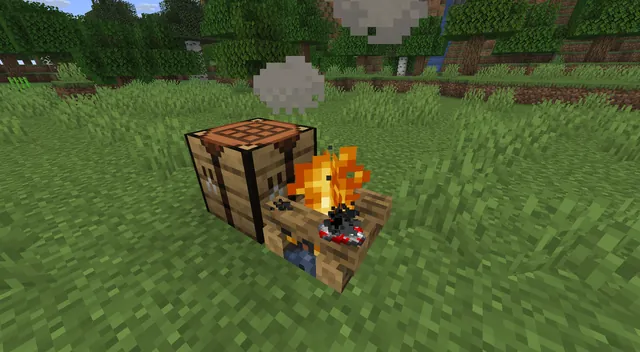
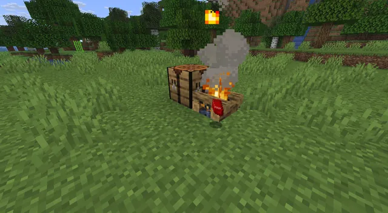

Blood 'n Meat
Overhauls survival gameplay with gritty new culinary options, blood-harvesting mechanics, and atmospheric crafting
Downloads
- NeoForge 1.21.8v0.0.1 · 22 KB
Screenshots

Item frames on a wooden wall showing the mod's red items: a blood drop, a blood blob, a bloodied ingot and a piece of red meat.

The crafting grid with an iron ingot and a red blob, showing a bloodied ingot as the result.

A crafting table next to a burning campfire, with a bloodstained item on the fire.

The same spot from further away, with a red item on the campfire logs and smoke rising.